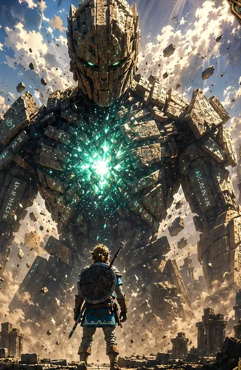
World lore
Ancient Colossals
Guardians and Titans older than kingdoms lie dormant in stone and root. At the Grand Festival of Elindor, a Guardian wakes through Elyza. The sky turns red, and the Titans stir.
Explore connected areas of a living world.
Early beta. Art, models and features are still in progress.
Vast lands Timeless stories People who matter
From skyborne cities to humble villages, a realm of beauty, mystery and endless adventure awaits.
Six continents wait beyond the first road: Elindor, Myrath, Solvara, Vharos, the Frostcrown Isles and the Siri Isles. Open the world atlas (opens in a new tab) ↗
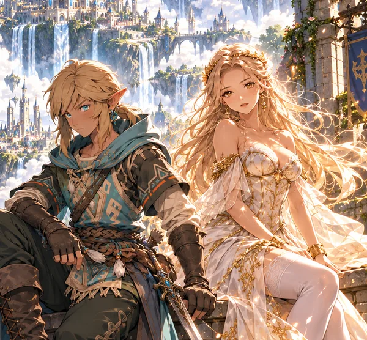
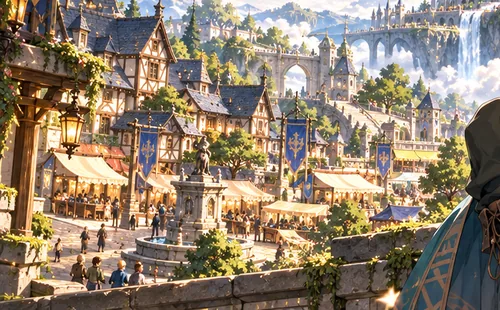
Legends of the realm
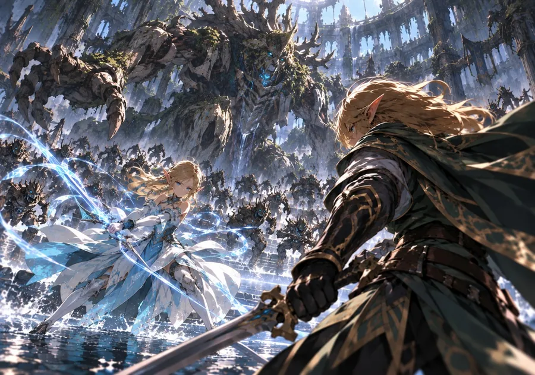

World lore
Guardians and Titans older than kingdoms lie dormant in stone and root. At the Grand Festival of Elindor, a Guardian wakes through Elyza. The sky turns red, and the Titans stir.
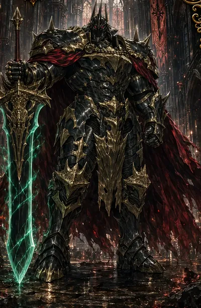
World concept · not in the beta
Where the light thins, the Shadow host gathers behind champions like the Obsidian Dreadknight. Its full story is still being written.
Meet
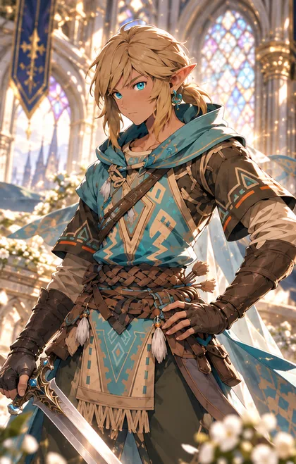
Key NPC · Elf
A wandering elf youth whose quiet courage carries him farther than he knows. Untested in the eyes of kings, he moves with instinct, kindness and resolve, and becomes a steady light for others.
Lance never speaks. He lets his choices answer.
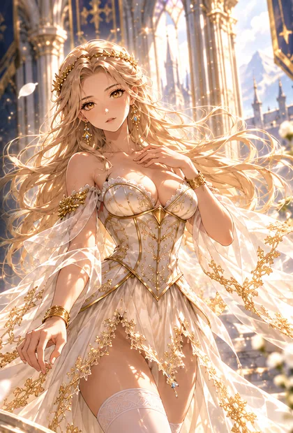
Key NPC · Princess
A radiant princess chosen by the light. Her kind heart and unwavering faith heal wounds unseen, and through her the Guardian's power awakens in those who fight for what is right.
“Where grace stands, hope still shines.”
Early beta
Two worlds. One journey ahead.
From the current build
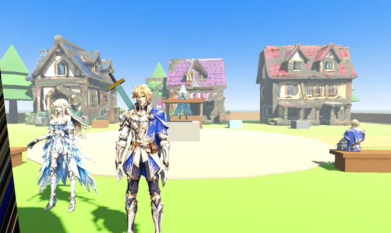
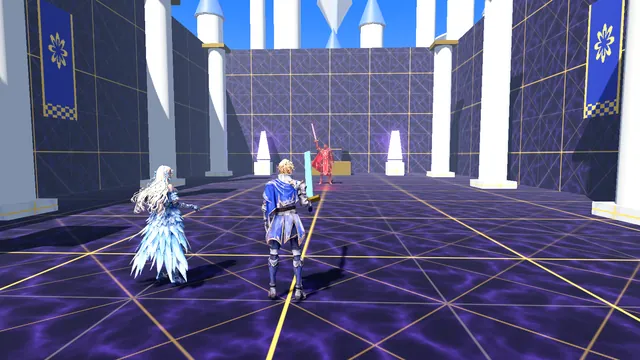
Artwork above shows where the game is heading. In the beta, characters use placeholder models.
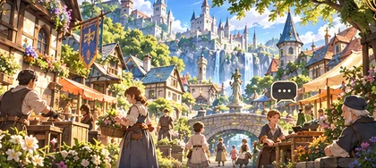
Villagers with daily routines who stop to react when you walk up. Tap Talk to hold a real conversation by voice or text.
Enter TestPlayable · in development
AI conversations are in testing; a villager may answer with a set line.
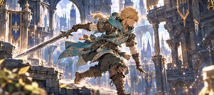
Climb the floating Sky Citadel: sneak past guards, jump the broken bridge, scale ladders through the ruin and face the Dark Knight in its core. Plus the Forest Escape.
Enter TestPlayable · in development